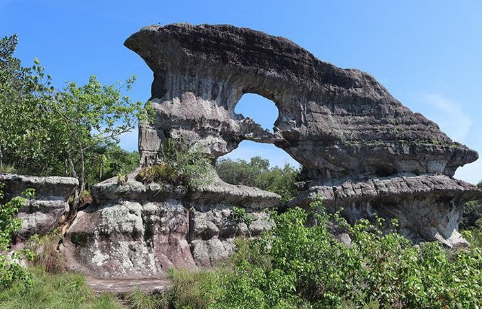

Inicio
Hoteles
Hotel Quinto nivel
Hotel puerta de orion
Hotel Tepuy
Hotel Las Palmas
Sitios Turisticos
Hotel Quinto nivel
Hotel puerta de orion
Hotel Tepuy
Hotel Las Palmas
Restaurantes
Puerta de Orión
La Puerta de Orión es una imponente estructura rocosa de más de 12 metros de alto por 15 metros de ancho en San José del Guaviare. Se denomina la Puerta de Orión, debido a que, según los pobladores locales, desde este lugar se alinea el cinturón de Orión y se puede ver a través de él. La Puerta está rodeada de una amplia extensión de vegetación, que se puede atravesar en un recorrido de alrededor de 40 minutos para contemplar la belleza geológica de uno de los lugares turísticos más impresionantes de la región.
Dirígete a reservar con tu agencia favorita
¡Reserva ya!

Correo electrónico
Comentarios
Enviar